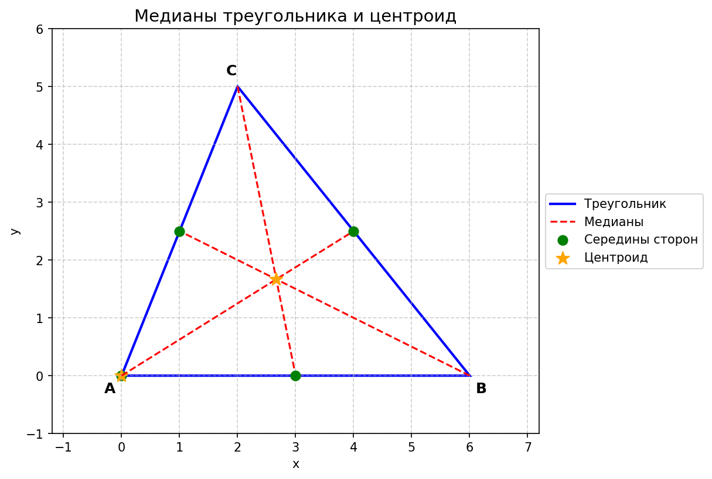
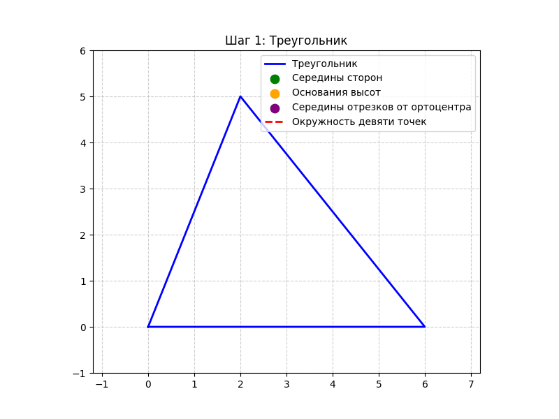
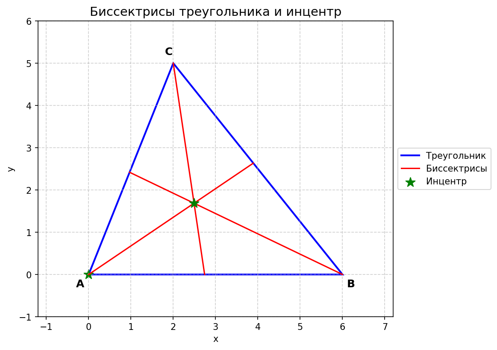
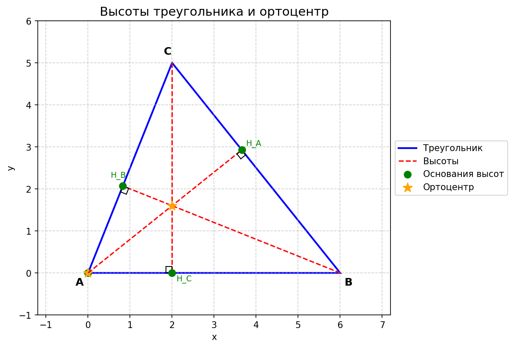
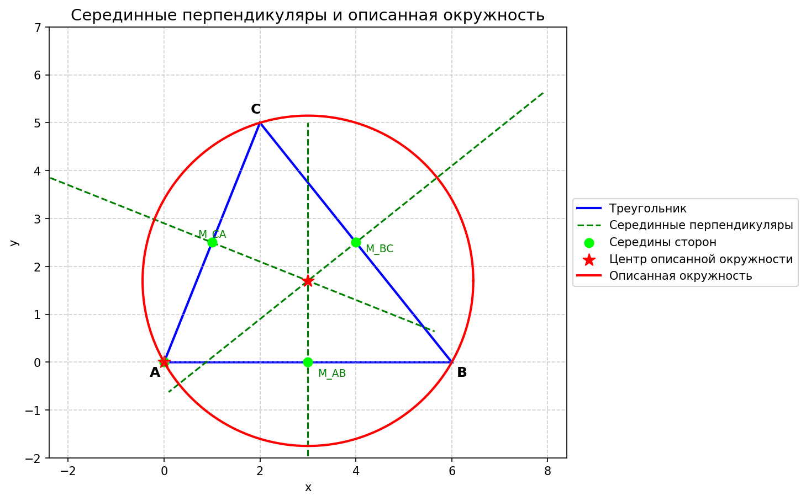
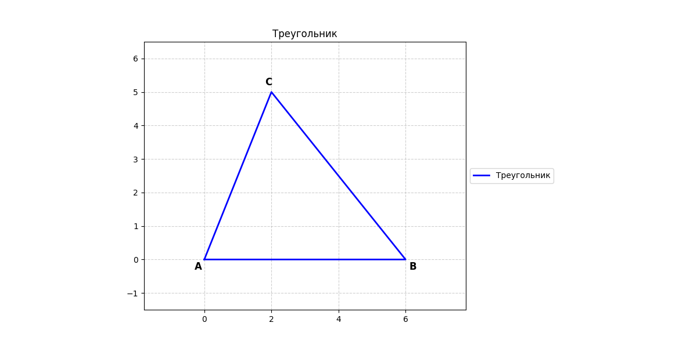

Элементарная геометрия треугольника#
1. Медианы#
Определение. Медианой треугольника называется отрезок, соединяющий вершину треугольника с серединой противоположной стороны.
Теорема (о пересечении медиан).
Все три медианы треугольника пересекаются в одной точке. Эта точка называется центроидом (или центром тяжести) треугольника. Центроид делит каждую медиану в отношении \((2:1)\), считая от вершины.
Следствие. Тремя медианами треугольник разбивается на шесть равновеликих треугольников.
(Площади всех шести маленьких треугольников равны.)
Центры описанных окружностей этих шести треугольников лежат на одной окружности, которая называется окружностью Ламуна.

2. Окружность девяти точек (окружность Эйлера)#
Рассмотрим произвольный треугольник \((ABC)\). Обозначим:
\((A_1, B_1, C_1)\) – середины сторон \((BC, CA, AB)\);
\((A_2, B_2, C_2)\) – основания высот, опущенных из вершин \((A, B, C)\) на противоположные стороны;
\((A_3, B_3, C_3)\) – середины отрезков от вершин до ортоцентра \((H)\) (точки пересечения высот).
Теорема Эйлера. Точки \((A_1, B_1, C_1, A_2, B_2, C_2, A_3, B_3, C_3)\) лежат на одной окружности. Эта окружность называется окружностью девяти точек (или окружностью Эйлера).
Свойства окружности девяти точек:
Её центр находится в середине отрезка, соединяющего ортоцентр \((H)\) и центр описанной окружности \((O)\). Таким образом, центр окружности девяти точек лежит на прямой Эйлера (о которой мы скажем позже).
Радиус окружности девяти точек равен половине радиуса описанной окружности.

3. Биссектрисы#
Определение. Биссектрисой треугольника называется отрезок биссектрисы внутреннего угла, заключённый между вершиной и противоположной стороной.
Теорема (о пересечении биссектрис).
Биссектрисы внутренних углов треугольника пересекаются в одной точке. Эта точка называется инцентром (центром вписанной окружности). Она равноудалена от всех сторон треугольника.
Свойства:
Инцентр является центром вписанной окружности.
Каждая биссектриса делится точкой пересечения биссектрис в отношении суммы прилежащих сторон к противолежащей, считая от вершины.
Биссектрисы одного внутреннего и двух внешних углов треугольника также пересекаются в одной точке – центре вневписанной окружности. Таких точек три (по числу углов).
Гипербола Фейербаха. Это описанная гипербола, проходящая через ортоцентр и инцентр. Её центр находится в точке Фейербаха (о которой ниже).

4. Высоты#
Определение. Высотой треугольника называется перпендикуляр, опущенный из вершины на прямую, содержащую противоположную сторону.
Теорема (о пересечении высот).
Три высоты треугольника (или их продолжения) пересекаются в одной точке. Эта точка называется ортоцентром и обозначается \((H)\).
Теорема Гамильтона. Три отрезка, соединяющих ортоцентр с вершинами остроугольного треугольника, разбивают его на три треугольника, имеющих ту же самую окружность Эйлера, что и исходный треугольник.
Обобщённая теорема Вивиани. Если от концов наименьшей стороны треугольника отложить на двух других сторонах отрезки, равные наименьшей стороне, и соединить полученные точки прямой, то эта прямая будет геометрическим местом точек, для которых сумма расстояний до трёх сторон треугольника постоянна. (Частный случай для равностороннего треугольника даёт классическую теорему Вивиани.)

5. Серединные перпендикуляры#
Определение. Серединным перпендикуляром к отрезку называется прямая, проходящая через середину отрезка и перпендикулярная ему.
Теорема (о пересечении серединных перпендикуляров).
Серединные перпендикуляры к сторонам треугольника пересекаются в одной точке. Эта точка – центр описанной окружности треугольника.
В остроугольном треугольнике центр лежит внутри треугольника.
В тупоугольном – вне треугольника.
В прямоугольном – на середине гипотенузы.
Свойство. Любая точка серединного перпендикуляра равноудалена от концов отрезка.

6. Замечательные точки треугольника#
6.1. Точка Лемуана#
Определение. Точкой Лемуана (или точкой пересечения симедиан) называется точка пересечения прямых, соединяющих вершины треугольника с точками пересечения касательных к описанной окружности, проведённых из двух других вершин.
Свойства:
Сумма квадратов расстояний от точки на плоскости до сторон треугольника минимальна, когда эта точка является точкой Лемуана.
Расстояния от точки Лемуана до сторон треугольника пропорциональны длинам сторон.
Точка Лемуана является точкой пересечения медиан треугольника, образованного проекциями этой точки на стороны. Более того, такая точка единственна.

6.2. Центр Шпикера#
Определение. Центр Шпикера – это центр масс периметра треугольника, т.е. центр тяжести однородной проволоки, изогнутой по периметру треугольника.
Свойства:
Центр Шпикера является инцентром серединного треугольника (треугольника, образованного серединами сторон исходного).
Центр Шпикера является центром кливеров треугольника (кливер – отрезок, соединяющий середину стороны с точкой касания вневписанной окружности).
Центр Шпикера является радикальным центром трёх вневписанных окружностей.
6.3. Точки Аполлония#
Определение. Точками Аполлония называются две такие точки, расстояния от которых до вершин треугольника обратно пропорциональны длинам противолежащих сторон.
Свойства:
Точки Аполлония являются центрами инверсии, переводящей данный треугольник в равносторонний.
Окружности, построенные как на диаметре на отрезке, соединяющем основания внутренней и внешней биссектрисы из одного угла, проходят через точки Аполлония.
Точки Аполлония лежат на прямой, соединяющей центр описанной окружности с точкой Лемуана. Эта прямая называется осью Брокара.
6.4. Точки Брокара#
Определение. Точками Брокара называются две точки внутри треугольника, возникающие как пересечение отрезков, соединяющих вершины с соответствующими свободными вершинами треугольников, подобных данному и построенных на его сторонах.
Свойства:
Точки Брокара лежат на окружности Брокара – окружности, построенной на отрезке, соединяющем центр описанной окружности с точкой Лемуана, как на диаметре. На ней также лежат вершины первых двух треугольников Брокара.
Точки Брокара сопряжены изогонально (т.е. симметричны относительно биссектрис углов).
6.5. Точки Торричелли (Ферма)#
Определение. Первая точка Торричелли – это точка треугольника, из которой все стороны видны под углом \((120^\circ)\). Она существует только в треугольниках, все углы которых меньше \((120^\circ)\).
Свойства:
Первая точка Торричелли минимизирует сумму расстояний до вершин треугольника. Поэтому она является частным случаем точки Ферма (которая может существовать и при угле \((120^\circ))\).
Две точки Торричелли и точка Лемуана лежат на одной прямой.
Теорема Лестера: В любом разностороннем треугольнике две точки Торричелли, центр девяти точек и центр описанной окружности лежат на одной окружности (окружности Лестера).
7. Прямая Эйлера#
Определение. Прямой Эйлера называется прямая, проходящая через центр описанной окружности \((O)\), центроид \((G)\) и ортоцентр \((H)\).
Теорема Эйлера. Точка пересечения медиан \((G)\) делит отрезок \((OH)\) в отношении \((OG:GH = 1:2)\) (считая от центра описанной окружности).
Теорема Шиффлера. Если в треугольнике \((ABC)\) с инцентром \((I)\) рассмотреть треугольники \((BCI)\), \((CAI)\), \((ABI)\), то их прямые Эйлера вместе с прямой Эйлера треугольника \((ABC)\) пересекаются в одной точке – точке Шиффлера.
8. Прямая Симсона#
Определение. Пусть точка \((P)\) лежит на описанной окружности треугольника \((ABC)\). Опустим из \((P)\) перпендикуляры на стороны треугольника (или их продолжения). Основания этих перпендикуляров лежат на одной прямой. Эта прямая называется прямой Симсона (иногда её называют прямой Уоллеса).
Теорема Симсона. Для любой точки \((P)\) на описанной окружности треугольника основания перпендикуляров, опущенных из \((P)\) на стороны треугольника (или их продолжения), коллинеарны.
Интересное свойство: Прямые Симсона для всех точек описанной окружности огибают кривую, называемую дельтоидой Штейнера (она касается каждой прямой Симсона).
9. Теоремы Чевы и Менелая#
Эти две теоремы являются мощным инструментом для доказательства конкурентности (пересечения в одной точке) прямых, соединяющих вершины с точками на сторонах, и коллинеарности точек.
9.1. Теорема Менелая#
Формулировка. Пусть прямая пересекает стороны треугольника \((ABC)\) (или их продолжения) в точках \((A_1 \in BC)\), \((B_1 \in CA)\), \((C_1 \in AB)\). Тогда эти три точки лежат на одной прямой тогда и только тогда, когда
(Отношения берутся как направленные отрезки, т.е. с учётом знака.)
9.2. Теорема Чевы#
Формулировка. Пусть на сторонах треугольника \((ABC)\) выбраны точки \((A_1 \in BC)\), \((B_1 \in CA)\), \((C_1 \in AB)\). Тогда отрезки \((AA_1, BB_1, CC_1)\) (чевианы) пересекаются в одной точке тогда и только тогда, когда
(Снова отношения направленные.)
Следствие. Медианы, биссектрисы и высоты пересекаются в одной точке – это легко проверяется по теореме Чевы.